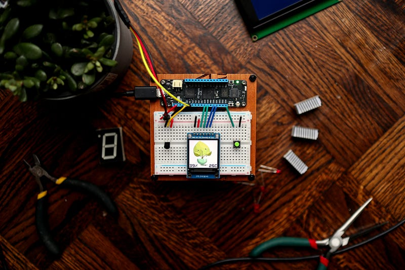

Internet of Things (IoT) is in lime light from last one decade and is not something very new but yet it sounds enticing even today. Even if you are aware of IoT, implementing it as an enterprise level solution is a different game all together. Hence the tech giants like Google, Amazon and Microsoft has provided their PaaS (Platform as a Service) for IoT usecases. This article focuses on the Azure IoT platform developed by Microsoft.

Azure IoT platform provides everything an organisation needs to implement enterprise level IoT solution considering factors like security, scalability and availability etc. Azure IoT platform revolves around few key concepts such as
- IoT Hub
- Device Provisioning Service
- Device communication
- IoT Events
IoT Hub
IoT Hub can be considered as the central system to which all the IoT devices and cloud services connects with in order to communication to each other. Cloud services can send requests or commands to interact with devices via IoT Hub. IoT Hub facilitate different ways of communication with device.
Device can be linked (registered) to IoT Hub in two ways
- Create a device from portal on the IoT Hub
- Enrolling via Device provisioning service
Device Provisioning Service
Device provisioning service as name suggests, handles the provisioning of IoT device on one or more IoT Hubs. DPS is used when you want to enroll devices on a scale. DPS helps you to create enrolment groups on which a configurations can be setup like initial device twin state (we will discuss it soon) and assigning one or more IoT Hubs etc. This enrolment group can be used to registering multiple device at scale. A certificate needs to be present on the device while enrolling via DPS.
Device can be provisioned via DPS using two ways of authentication
- CA Certificates
- Self signed certificates
Incase a device is getting registering on DPS using CA certificates then device should have a leaf certificate and its root/intermediate certificate should be upload on DPS beforehand.
Device Communication
Azure IoT platform enable you to interaction with an IoT enabled device. This interaction can be the exchange of data or functionality. Lets discuss what are available options for communicating with IoT device programmatically.
Device twin state
JSON object which represents device current state / configuration. This object comprises of 2 nested objects as follows
- Reported properties : object can be modified by the device only and is used by device to respond to the cloud services (using Azure IoT service SDK).
- Desired properties : object can be modified by cloud services (using Azure IoT service SDK) and is used to command the IoT device.
D2C / C2D messaging
D2C and C2D messaging is a device to cloud and cloud to device messaging respectively. D2C messages are used for telemetry purposes by the device and can be used for high frequency messaging. C2D messages are available for similar purpose for backend service using Azure IoT service SDK.
Direct method
Direct methods can be understood as an analogy to remote procedure calls. A cloud service can invoke a function using a name and its arguments which can trigger a callback on the device end. As soon as device receive this direct method call , it can internally invoke a particular function with respect to the function name.
File upload
A storage account can be linked with every IoT hub. These storage account contains a storage container which can be used to store different sort of data. File upload is feature which can be used by the IoT device to upload files to the IoT hub linked storage container.
Device streams
Azure IoT Hub device streams facilitate the creation of secure bi-directional TCP tunnels for a variety of cloud-to-device communication scenario. IoT hub’s main endpoint orchestrates the creation of a device stream, the streaming endpoint handles the traffic that flows between the service and device.
Device streams are currently under public preview phase in the Azure IoT SDK.
IoT Events
Throughout the IoT device lifecycle, multiple events are emitted within the Azure platform which can consumed for multiple purposes such as triggering some functionality or logging device state. These events can be of the following types
- Microsoft.Devices.DeviceCreated : Published when a device is registered to an IoT hub.
- Microsoft.Devices.DeviceDeleted : Published when a device is deleted from an IoT hub.
- Microsoft.Devices.DeviceConnected : Published when a device is connected to an IoT hub.
- Microsoft.Devices.DeviceDisconnected : Published when a device is disconnected from an IoT hub.
- Microsoft.Devices.DeviceTelemetry : Published when a device telemetry message is sent to an IoT hub
These events can be routed to different resources like Azure functions, Azure event grid and Azure event hub.
Conclusion
Microsoft Azure platform provides multiple IoT tools to cater variety of use cases. Similar solutions are provided by AWS and Google as well. These tools can be used to develop enterprise level IoT solutions which are high performant, scalable and highly available.
“ Third party managed IoT services can be used by an organisation to make the products IoT enabled. These managed services can save a lot of effort, cost and time for even a mature organisation while achieving there goal to be IoT enabled. “